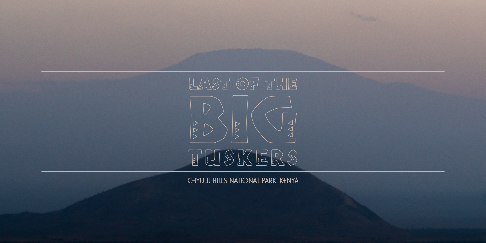

September 2018
Last of the Big Tuskers – Poster
Designed by Dane Aleksander with Serif Affinity Photo.
In 2016, I backed a project on Kickstarter: Last of the Big Tuskers, a film by James Currie. I had not known James at the time though my impression was that we shared an interest in wildlife storytelling and in wildlife conservation, and in this case in a South African story about elephant conservation. In particular, this was a film about the last of the bull “super-tusker” elephants in Tembe Elephant Park. The project was successfully funded in part on Kickstarter.
I had reached out to the Kickstarter campaign to offer assistance with graphic art because I wanted to see the film about elephants succeed. At the very least, I wanted to help improve upon the cover art. The cover art, such as a film poster or a web header, is often a first impression for a film. A film can benefit from a visual identity that exists throughout its promotional material and then extends into the film itself. This includes the film poster and cover art, the film titles and subtitles, the film credits and main scroll, and the website and web content and so on. So the visual identity for Last of the Big Tuskers covered it all: the cover art and album art and so on, the film credits, titles (for people and for elephants) and subtitles (for archival elephant footage and for locations and so on), and the film website and so on. [1]
South African Type
There was an early edit of the film cut in 2017. James shared his story and welcomed my assistance. We started with a discussion about graphics for the film, about changes to the cover art, and ultimately about what the story was about.
This story was unique to a part of southern Africa. Typography with reference to an African style, however, was often applied with dramatic colors or with skeuomorphic textures, such as wooden and handcrafted. And yet the shape of such stylistic typefaces was often enough to communicate the spirit of the lettering. Title design for the film was an opportunity to appropriate an African inspired typeface with a more moderate tone. A unique title design can take on a characteristic of a story and that character can transmit into the film. In this case, the typography helps to uniquely promote Africa as a part of the story.
This is Tabwa—a font designed in 2007 by Anton Scholtz for Scholtz Fonts, a type foundry that he founded in Durban, South Africa. The font design is inspired by the Zulu culture of the region as well as by the font named: Neuland—a font designed in 1923 by Rudolf Koch for Klingspor for titling, in which the letters appear cut in wood. The Tabwa font is a less “art deco” and more “modern” redesign in the spirit of the original Neuland, and blended with the spirit of Africa. The triangles that decorate the characters are described as typical of the patterns found in the Tabwa culture of central and west Africa.
The look of the lettering is a practical way to represent a story. Typography impresses upon the motive of a typewritten word, with a range of visual extremes. Neutral typography is a best conservative direction. The best typographic design, however, is of a style that suits the story. (What is the story about?) The imperative – especially with a unique title typeface – is then to repeat the typographic design wherever the title is on display: in the film and in promotional material in print and on the web and so on, and so on.

The Photographic Spots
When we first had a chance to chat, James had just arrived back from the very film trip that the Kickstarter campaign had raised funds to support. James shared photos from his return to South Africa and adventure in Kenya. The landscape photography presented an opportunity to introduce the visual language of the film along with the important locations—the national parks. The photographic spots help to establish the landscape of the story.
Last of the Big Tuskers photographic spot
The series of posters was a variation on a theme, which represented select locations (and exclusive content for select marketplaces).
This collection of photographic spots also presented an absence. The question is raised: “Where are the elephants?” (Are there any big tuskers left to film?) Yes, there are big tuskers in the film, yet the question is valid and the question remains: “Will there be any big tuskers in the wild for much longer?”
Last of the Big Tuskers photographic spot: “Amboseli National Park”
Last of the Big Tuskers photographic spot: “Chyulu Hills National Park”
Last of the Big Tuskers photographic spot: “Tsavo West National Park”
The photographic spots were an alternative option. The film was all about the last “super-tusker” elephants, and the “king” was Isilo—the biggest elephant in a protected sandforest that exists uniquely in – and around – Tembe Elephant Park. There was no beating around the bush, the cover art was always all about Isilo.
Last of the Big Tuskers photograph: “Isilo” (Kickstarter) © Erik Schram
The Cover Boy
The painterly style that appears in the poster was arrived at in concept art, out of the need to paint over a low-resolution reference image from the Kickstarter project page. The digital painting process for the cover art exercised almost exclusively a single digital brush: Khan Square Brush, created by the creators of The Dam Keeper (animated short film, 2014). This is a prefered software tool for blocking-in digital art in development. The painterly texture was repeated in the visual identity of the film: the film poster and cover art and so on, the “magnificent seven” elephant graphics, and the film subtitle straps.
Last of the Big Tuskers festival poster (2018)
A painterly style is less conventional, and less neutral, than a minimalist and monochromatic art direction. Any particular style presents a risk that the image distracts from the message. A particular painterly style is made appropriate in the context of a story that is equally as unique. This film about a niche area with a niche elephant population made the case. The art of the film has appropriated the unique character of the story with a treatment of texture and type. In particular in the cover, digital painting made it possible to render the landscape more abstract and draw the focus more to Isilo. The landscape is faded in the background and abstractly repeats the silhouette of Isilo's two big tusks. The cover art was formatted for print as a film poster, and was updated with laurels collected in the 2018-2019 film festival calendar. Congratulations, James!
The cover art was redesigned for print on the digital video disc (DVD) labels, and was reproduced at different dimensions for digital spots on the web.
Last of the Big Tuskers cover art (DVD, 2018)
The visual identity was integrated into the official website of the film, which was designed and developed with the open-source WordPress information architecture. Wordpress was implemented to maintain and manage the website as well as to allow any contributors and editors to easily access the web content. The website was designed to present the provided information about the film, and to showcase a focused narrative of the film: the big tuskers and the big support. The cover art was set as a web header.
Last of the Big Tuskers cover art (2018)
The Magnificent Seven
The painterly style that was introduced in the cover art was then extended to a series of elephant graphics. The elephant graphics each referenced a specific frame from the film and presented an opportunity to pause for a moment on each one of the featured big tuskers. There were seven featured in the film. This idea was executed in part: the elephants are commemorated on the website and the digital paintings made available in print in limited edition with proceeds going to wildlife foundations also featured in the film: Big Life Foundation, The Tsavo Trust, Tembe Tusker Foundation.

Last of the Big Tuskers elephant graphic: “Isilo” (2018) [danealeksander.github.io]
This, once more, is Isilo. This references the last footage of Isilo alive in the film. This painting was a moment of reflection, and the tusks were the point of focus. The flow of the paths, the grass, the trees, and the pond and so on – all – leads into Isilo. The color takes advantage of an image compression that occurs when the reference image is a single frame of already compressed footage. The highlights and shadows on the skin of the mud-covered elephant appear to have subtle yellow and purple compression artifacts, which have been drawn upon to emphasize the royal tone of the “king of kings”. The warm highlight is like a crown on the head of the magnificent bull elephant.
The title design and cover art and so on were an obliged contribution. The proposed collaboration was a series of map graphics for the film. Art direction was likewise a discussion for the map graphics.
Continue to Part 2: Visual Effects.
1 Original cover art for the Last of the Big Tuskers (documentary film) Kickstarter project page. Website Link
This project page is concluded and is archived as a case study.
Client Team
James Currie.
Special thanks to Erik Schram, James Currie, Johan Marais and Richard Moller for reference images of the elephants featured in the film.
Iconography
The Dam Keeper (2014) digital brush.
Typography
Desktop Font / Webfont: Tabwa (2007) by Scholtz Fonts; Casablanca [Light] (1997) by URW++.
Default: Helvetica Neue [55 Roman] (1983) by Linotype.
Website
Official Website: bigtuskers.com.